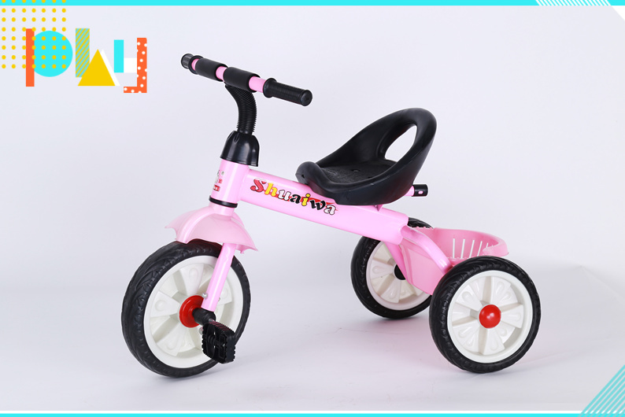
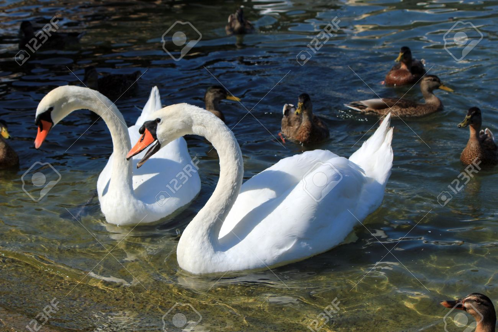
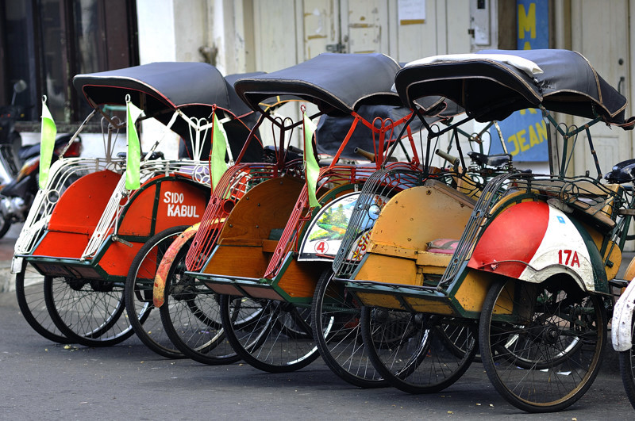

Lirik Lagu Anak-Anak
"Balonku Ada Lima"
Balonku ada lima
Rupa-rupa warnanya
Hijau, Kuning, Kelabu,
Merah Muda dan Biru..
Meletus Balon Hijau.. Dor!!
Hatiku Sangat Kacau,
Balonku tinggal empat,
Kupegang erat-erat..

Lirik Lagu Anak-Anak
"Kring Ada Sepeda"
Kring! Kring! Kring!
Ada Sepeda
Sepedaku roda tiga
Kudapat dari ayah
Karena rajin bekerja
Tok! Tok! Tok!
Ada Sepatu
Sepatuku kulit lembu
Kudapat dari ibu
Karena rajin membantu
Lirik Lagu Anak-Anak
"Aku Seorang Kapiten"
Aku Seorang Kapiten
Mempunyai Pedang Panjang
Kalau berjalan
Prok! Prok! Prok!
Aku Seorang Kapiten
Lirik Lagu Anak-Anak
"Naik Kereta Api"
Naik Kereta Api
...tut...tut...tut
Siapa hendak turut
Ke Bandung ... Surabaya
Bolehlah naik dengan percuma
Ayo temanku lekas naik
Keretaku tak berhenti lama
Cepat kretaku jalan
...tut...tut...tut
Banyak penumpang turun
K'retaku sudah penat
Karena beban terlalu berat
Di sinilah ada stasiun
Penumpang semua turun

Lirik Lagu Anak-Anak
"Potong Bebek Angsa"
Potong Bebek Angsa
Masak di kuali..
Nona Minta Dansa
Dansa Empat Kali
Sorong ke kiri..
Sorong ke kanan..
lalalalalalalalalalala
Lirik Lagu Anak-Anak
"Pergi Belajar"
Oh..
ibu dan ayah,
Selamat pagi
Kupergi sekolah
Sampai kan nanti
Selamat belajar,
Nak penuh semangat
Rajinlah selalu
Tentu kau dapat
Hormati gurumu
Sayangi teman
Itulah tandanya
Kau murid budiman

Lirik Lagu Anak-Anak
"Bintang Kecil"
Bintang kecil
Dilangit yang tinggi
Amat banyak
Menghias angkasa
Aku ingin
Terbang dan menari
Jauh tinggi
Ketempat kau berada

Lirik Lagu Anak-Anak
"Bintang Kecil"
Pada hari minggu kuturut ayah ke kota
Naik delman istimewa
Ku duduk dimuka
Ku duduk samping pak kusir
Yang sedang bekerja
Mengedarai kuda
Supaya baik jalannya
Tuk Tik Tak Tik Tuk Tik Tak Tik Tuk
Tuk Tik Tak Tik Tuk Tik Tak (suara sepatu kuda)
Tuk Tik Tak Tik Tuk Tik Tak Tik Tuk
Tuk Tik Tak Tik Tuk Tik Tak (suara sepatu kuda)

Lirik Lagu Anak-Anak
"Nenek Moyangku"
Nenek moyangku seorang pelaut
Gemar mengarung luas samudra
Menerjang ombak tiada takut
Menempuh badai sudah biasa
Angin bertiup layar terkembang
Ombak berdebur di tepi pantai
Pemuda b'rani bangkit sekarang
Ke laut kita beramai-ramai
Nenek moyangku seorang pelaut sejati
Tiada takut mengarung samudra luas
Laut biru dan gelombang badai angin menerpa
Tak gentar melewati semua rintangan itu

Lirik Lagu Anak-Anak
"Becak"
Saya mau tamasya
Berk'liling-k'liling kota
Hendak melihat-lihat
Keramaian yang ada
Saya panggil kang becak
Kereta tak berkuda
Becak! Becak!
Coba bawa saya
Saya duduk sendiri
Sambil mengangkat kaki
Melihat dengan asyik
Ke kanan dan ke kiri
Lihat becak ku lari
Bagai takkan berhenti
Becak! Becak!
Jalan hati-hati